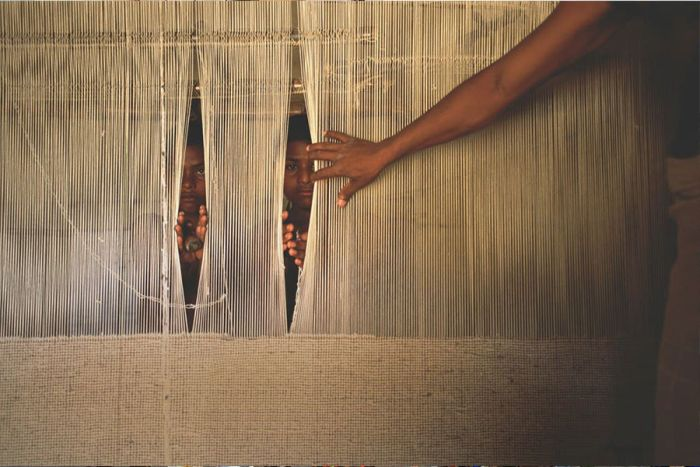

Walk Free is an international human rights group focussed on the eradication of modern slavery, in all its forms, in our lifetime.
Our all-female, international team, ranges from statisticians, criminologists, lawyers, and international development experts,
workingto create and agitate for mass systems change, to address the root
causes of slavery.
Walk Free believes that a strong, multifaceted
approach is needed to end modern slavery
We are building a robust knowledge base to inform action, driving legislative change in key countries and harnessing the power of businesses and faiths.
Through a combination of direct implementation, grassroots community engagement, and working in partnership with faiths, businesses, academics, NGOs, and governments around the world, we work to address slavery and dismantle its core drivers.
WALK FREE WAS FOUNDED BY GRACE AND ANDREW FORREST IN 2010. IT IS PART OF, AND FUNDED BY, MINDEROO FOUNDATION, A MODERN PHILANTHROPIC ORGANISATION WORKING TO ARREST UNFAIRNESS AND CREATE OPPORTUNITIES IN AUSTRALIA AND AROUND THE WORLD.
